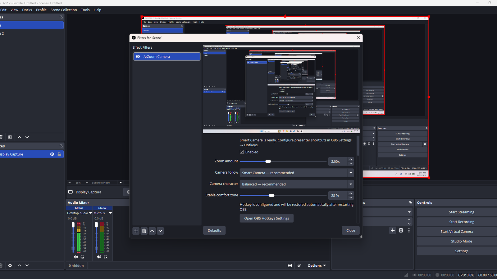

01
Scene-wide camera
Display Capture, webcam, browser, logo, and nested-scene content zoom together after normal OBS composition.
ArZoom Scene Camera processes the composed OBS scene, maps supported real-world Display Capture layouts without rewriting scene-item transforms, then follows presentation context with smooth kinematic motion that settles exactly.
Windows 10/11 x64 · OBS 31.1.1 build baseline · Installer + manual ZIP · GPL-2.0-or-later

ArZoom treats mouse position as presentation intent. Small pointing gestures can stay steady; meaningful relocation starts promptly, follows decisively, brakes smoothly, and finishes completely still.
Display Capture, webcam, browser, logo, and nested-scene content zoom together after normal OBS composition.
Planner decides where to frame; jerk-limited motion decides how to get there without stop-start searching.
ArZoom does not persistently rewrite scene-item position, scale, rotation, bounds, or crop.
Local work remains calm; far movement gets prompt pointer acquisition and useful near-centre final framing.
Explicit velocity/acceleration state, jerk-limited changes, far cruise, precision braking, and exact HOLD.
One top-level Display Capture can be fullscreen, scaled/inset, or cropped when its axis-aligned mapping is deterministic.
Toggle/Hold Zoom, Freeze, Smart Follow On/Off, Zoom +/−, Reset, and Overview Peek through OBS hotkeys.
Seven built-in tactile cursor styles with hotspot ownership and exact live camera-zoom scaling.
Analytic click rings share the presentation pass and stay anchored to the clicked content.
Close OBS and run the Windows installer. Standard and portable/custom OBS roots are supported.
Fullscreen is simplest. Deterministic positive axis-aligned scaled/inset and crop-aware layouts are also supported in v0.6.0.
Choose Tools → ArZoom — Toggle Scene Camera. ArZoom creates a managed scene filter automatically.
Use Tools → ArZoom — Configure Scene Camera, then assign presenter controls in OBS Settings → Hotkeys.
Disable old per-source ArZoom filters while Scene Camera is active; disable native Display Capture cursor when using ArZoom Presentation Cursor.
If ownership or geometry is ambiguous, ArZoom keeps safe presenter controls available but does not guess pointer positions.
Exactly one visible top-level Display Capture with deterministic monitor ownership and a proven positive axis-aligned fullscreen/scale/inset/crop mapping.
ArZoom does not upload captured frames, cursor coordinates, click data, hotkeys, settings, or analytics. Rendering and control stay local inside OBS.
No AI inference, OCR, telemetry, user account, advertising SDK, or external processing service is required.
Yes. The existing per-source ArZoom Filter remains available as the lightest Display Capture-only workflow.
No. Scene-wide presentation transforms are applied in the filter output. ArZoom does not persistently rewrite scene-item position, scale, rotation, bounds, or crop.
Yes in v0.6.0 when one top-level Display Capture has a deterministic positive axis-aligned scaled/inset or cropped mapping. Ambiguous multi-capture, unproven rotation/skew/flip, unsupported bounds, or unresolved nested ownership still fail safe.
That is intentional. ArZoom follows presentation context. Local pointing remains calm; meaningful relocation triggers prompt tracking, smooth travel, precision braking, and exact HOLD.
Yes. P4.1 Trial 8 was accepted through direct OBS use and is backed by deterministic mapping, pointer-acquisition, motion-quality, build, and packaging gates. Broader OBS/GPU/mixed-DPI field validation continues on the road to v1.0.
No. ArZoom has no analytics service and does not transmit screen or cursor data.
Install ArZoom, toggle Scene Camera, and keep the audience focused without rewriting your composition.